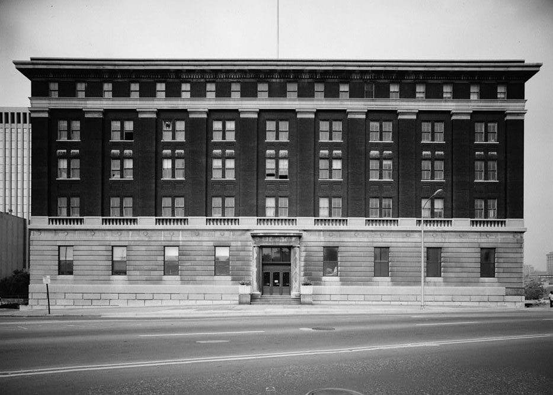

![]()
Last week, a man named Freddie Gray died of injuries received after his arrest by officers of the Baltimore City Police Department. Gray’s death and the ongoing protests have focused local and national media on the violence of police brutality in Baltimore City. Reading stories on the recent history of deaths in police custody, the history of “rough rides” in Baltimore police (both from the Baltimore Sun) and a look back on a decade of police brutality complaints (“The Obscene Culture of Police Brutality”) have helped broaden my understanding of this issue. But when Gene Ryan, president of the Baltimore Police Union, stated protests that call for the arrest of the officers involved in Freddie Gray’s death “look and sound like a lynch mob” - it is a disturbing reminder that a deeper understanding of American history is essential to reforming an unjust police department. And much of this history is still unwritten.

With all of this in mind, I’ve assembled a selection of accounts reviewing the history of police violence against African Americans in Baltimore from the 1850s through the 1960s. When reading, please remember that this work is both incomplete and in progress. Comments and questions are welcome and I hope to update and expand this post over the next few weeks.
Update: You can now read my draft study on criminal injustice in Baltimore for some broader context on this post.
March 1852: William Smith killed by a Baltimore police officer in Pennsylvania
The Fugitive Slave Act in 1850 enlisted local and state police in a renewed and expanded campaign to recapture any people who escaped from slavery in the south to free states in the north. Writing in 1883, William T. Alexander observed an “remarkable” growth in the “activity and universality of slave hunting” under the new law. The examples Alexander highlighted included James Hamlet captured in New York City at the request of a Baltimore slave-holder and the murder of William Smith in Pennsylvania by a Baltimore police officer:
“That Act became a law on the 18th of September and, within ten days thereafter, a colored man named James Hamlet had been seized in the city of New York and very summarily dispatched to a woman in Baltimore, who claimed him as her slave. […]
“The needless brutality with which these seizures were often made tended to intensify the popular repugnance which they occasioned. In repeated instances, the first notice the alleged fugitive had of his peril was given him by a blow on the head, sometimes with a club or stick of wood; and being thus knocked down, he was carried bleeding and insensible, before the facile commissioner, who made short work of identifying him and earning his ten dollars by remanding him into slavery. In Columbia, Penn., March, 1852, a colored person named William Smith was seized as a fugitive by a Baltimore police officer, while working in a lumber yard, and, attempting to escape the officer drew a pistol and shot him dead.”
July 31, 1875: Daniel Brown killed by Baltimore police officer Patrick McDonald
In the early morning hours of Saturday, July 31, 1875, Baltimore Police officer Patrick McDonald shot and killed Daniel Brown at his home on Tyson Street. The Baltimore Sun described the shooting in an account published on August 2:
Saturday morning, shortly before two o’clock, Daniel Brown, colored, of No. 41 Tyson street, was shot in the head by police officer Patrick McDonald, of the northwestern district, and in about half an hour died from the effects of the wound. A party or sociable entertainment was going on in Brown’s house, and complaint of the noise having been made to policeman McDonald, he went to the place. Words were exchanged at the door of the house between the officer outside and the people inside. The result was that Brown was “tapped on the head” by the policeman’s club. The policeman went into the house, and there, it is alleged, shot and killed Brown without provocation. Policeman McDonald on the other hand asserts that the shooting was in self-defense. He avers that he felt his life to be in imminent peril! A coroner’s jury, after examining over a dozen witnesses rendered a verdict that “Daniel Brown came to his death by a pistolshot from the hands of policeman Patrick McDonald,” and on the commitment of Coroner Ogle the accused was sent to jail by Captain Earhart.
The initial argument between McDonald and Brown started with McDonald’s demand to see a permit for the party (commonly known as a “cake-walk”). Mary Parker, a resident of 232 North Charles Street, testified “she was in the front room at Brown’s” continuing:
“Brown said he paid rent for the house . The officer said he”need’nt be so — saucy.” Brown had his head out the door. The officer caught Brown and struck him over the head with his club. He staggered and fell toward a closet in the front room. The police now followed his his pistol in his hand and Mrs. Brown behind him, begging him not to shoot. She said, “He is my husband” and the officer, saying he didn’t care a d–n,” fired. Brown never spoke after he was struck on the head. John Greason begged the officer not to shoot. The officer said the would kill every black —.”
The Baltimore Sun described Brown writing:
“Daniel Brown, the deceased, was a dark mulatto, thirty-seven years of age, and leaves a wife but no children. He was industrious and sober, quite intelligent and strong in urging his own way. In the daytime of late he was employed as a laborer, and occasionally at night worked in Woods, Weeks & Co,’s sugar refinery.”
The Sun continued to provide detailed coverage of McDonald’s trial from mid to late November. On November 24, 1875, the jury returned the verdict: “Not guilty of murder, but guilty of manslaughter.”
July 19, 1884: Police officer F.L. Kruse shoots and kills John Wesley Green
On July 24, 1884, the Baltimore Sun reported:
Police officer F.L. Kruse, of the Western district, who shot John Wesley Green, colored in the back and fatally injured him last Saturday night, was exonerated by the police board yesterday, and was patrolling his beat last night. […]
Commissioners Milroy and Herbert voted to exonerate the officer, Mr. Colton dissenting. Mr. Colton said: “The officer did not see Green commit any offense and he did not have a warrant of law to arrest him. I consider the taking of human life too serious a matter to justify the officer in using his pistol in this case.”
June 1, 1918: Baltimore police shoot and kill a “colored man on Pennsylvania avenue”
On June 7, 1918, the Afro American reported on a shooting involving multiple Baltimore City police officers that resulted in the death of one man:
The fatal shooting of a colored man on Pennsylvania avenue by the police last Saturday night and the severe wounding of another, has aroused a great deal of comment this week. It appears that some colored men were disorderly and the police grabbed one. While dragging him to the call box some one hit the policeman with a chair. Despite the crowded condition of Pennsylvania avenue at that time, it is said the police began shooting, with the result that one man lay dead and another seriously wounded. The man killed it is averred by some was not the man who hit the policeman.
A ban has been placed on pedestrians, and any who stop to talk this Saturday may be arrested. Some of the police, it is alleged are gloating over the killing of the man. They look forward to making a harvest in arrests this [Saturday] night, it is being claimed.
Pennsylvania avenue has been what some call an “indicted street” since the recent large influx from the South and many have been arrested on Saturday nights and charged with loitering.
A decade ago the police indiscriminately arrested colored men and women who happened to stop even for conversation. They were invariable fined notwithstanding character witnesses appeared the next morning in a number of instances and attested to the good habits on those taken in.
February 1919: Black soldier brutally beaten by Baltimore police officer
On February 16, 1918, the Baltimore Sun praised Judge Stanton for his role in protesting a recent incident of police brutality:
“Judge Stanton has rendered a service in calling the attention of the Police Commissioners to the alleged brutality of a policeman in dealing with a soldier who resisted arrest… In this case, we are sorry to say, the soldier behaved like a rowdy. But, for all that, the policeman who undertook to arrest him was not justified in treating him brutally. He could have managed him, we imagine, without resorting to methods which excited indignation in the minds of spectators. The patrolman was in civilian clothes at the time and the soldier naturally did not recognize his authority.
Discretion is a virtue that is as important as valor or as muscle on the part of a police officer. We think the Commissioners should look into this incident carefully.”
May 31, 1926: Police officer James O. Jones beats Henry Boyer
On June 12, 1926, the Afro-American reported on an efforts by Baptist ministers in Baltimore to protest the actions of Baltimore police officer James O. Jones in “beating up” Henry Boyer, writing:
What they termed the most brutal abuse of police authority and wanton disregard for the rights of citizens was brought out in the Monday Baptist Ministers’ meeting when the Rev J.C. Sweeney described the act of Officer James O. Jones beating up Henry Boyer on Winchester street May 31.
According to a version of the affair, as stated by the Rev. Mr. Sweeney and the boy in question, Officer Jones of the Northwestern district used his espantoon on young boyer when he “sassed” him when told to move on from the corner of Stricker and Winchester streets.
Boyer stated that when he did not move fast enough the officer seized him and he asked that before he was arrested he be allowed to send word to his mother. He was then beaten up until he was “bloody” he declared. At the station house the officer said Boyer “sassed” him and resisted arrest…
When the case was brought up in the Criminal Court Wednesday Judge O’Dunne told the officer that “sassing” an officer would not be considered a disturbance of the public peace in his court. “It might be a disturbance of the peace of the officer, but did not constitute a breach of the law against the public,” he stated. He held the boy’s case under advisement.
The practice of beating up citizens and then preferring charges of resisting arrest against them was also discussed by the ministers. It was pointed out that efficient officers were always able to arrest even criminals without the use of their sticks, and that even an amateur officer ought to be able to take a lad to the station house without having to “subdue” him by battering his head up.
Another practice which is said to be common among some officers is to mete punishment themselves for things said to them by those they arrest. This punishment is against the law, it is said, and those so treated should take their cases always to the Criminal Court, it was advised.
March 17, 1930: Baltimore police officer Herman Trautner kills Roosevelt Yates
On March 22, 1930, the Afro reported on the death of Roosevelt Yates after he was shot and killed by Herman Trautnet in his home at 905 Bennett Place:
Police here chalked up another victim when Officer Herman Trautner shot and fatally wounded Roosevelt Yates during arrest of the latter at his home, 905 Bennett Place, Monday. [Trautner] shot Roosevelt in the chest after the latter had grabbed the officer’s espantoon before it landed in a blow on his head, it was said. In his report, officer Trautner declared that he shot in self defense when Yates started towards him with the night stick after wresting it from his hand in a struggle.
On March 29, 1930, the Afro reflect on the killing as a pattern of brutality by the Baltimore police:
Baltimore police killed their eight victim in six years last week when Officer Herman Trautner, white, killed Roosevelt Yates, an unarmed man he was seeking to arrest. Five others had been killed by policemen in fifteen years previously. As a result of these thirteen shootings, only one policeman has been punished. […]
The trouble is police brutality in Baltimore has gone as far as some people are going to stand. Men and women are usually willing to be arrested but not clubbed by police. This is especially true as to those persons who are engaged in a mere wordy brawl.
Of the eight men killed, five have been murdered by police of the Northwestern district, administered by Captain Charles Lastner. As the AFRO has repeatedly pointed out, the difference between the conduct of Baltimore police in the Northwestern district and the Southeastern district is the difference between right and wrong. If police can be gentlemen in southeast Baltimore, they can be gentlemen in the northwestern part of the city.
Every unnecessary drop of blood shed by murderous police we place at the doors of, first, Captain Lastner who is responsible for directions given his own men, and secondly, Police Commissioner Gaither who permits Captain Lastner to continue his policy of “shoot first, investigate and explain later.”
September 1, 1930: William Johnson dies after assault by police officer Harry Holley
On September 6, 1930, the Afro-American reported on the NAACP protesting to the governor after an assault on William Johnson by police officer Harry Holley left Johnson unconscious for two weeks before dying at the University Hospital:
At an inquest at the Western police station Thursday night, Officer Harry Holly was exonerated in the killing of William Johnson who died after being struck with a blackjack by the officer. Fourteen witnesses testified that the officer brutally assaulted Johnson without provocation. One white man and the officer testified for the defense.
The death of William Johnson, 137 W. Camden Street, on September 1 at University Hospital after being hit with a blackjack by Policeman Harry Holley, white, of the Western district, aroused the city this week.
February 21, 1942: Police officer Edward R. Bender kills Thomas Broadus
On February 7, 1942, the Afro reported on the death of Thomas Broadus after he was shot and killed by Edward R. Bender:
In the presence of scores of persons who were passing along Baltimore’s busy Pennsylvania Avenue late Saturday night, Patrolman Edward Bender, Northwestern district officer, shot and killed Private Thomas Broadus, 26, Pittsburgh, a member of the 1322nd Service Unit at Fort George G. Meade.
Witnesses said that Patrolman Bender (who is the same policeman that killed Charles Parker, 24, of 217 Colvin Street, February 14, 1940) then keep the crowd at bay by brandishing his revolver until other policeman arrived in several radio cars. The unconscious form of the soldier, drafted nine months ago, was placed in a patrol wagon, witnesses said, and taken to Provident Hospital, where it was pronounced dead five minutes after being admitted.
By late April of 1942, protests over the shooting sparked Baltimore Civil Rights advocates to organize the March on Annapolis with around 1,800 African Americans traveling to the state capital to protest police brutality and racial discrimination. The march forced the Baltimore police to appoint the city’s first uniformed black police officers and led Governor Herbert R. O’Conor to appoint a statewide Commission on Problems Affecting the Negro Population.
On September 25, 1942, the Afro reported that the commission released a report urging the Bender case to be reopened:
Charging that there is prima facie evidence that the killing by Patrolman Edward R. Bender, of the Northwestern district, of a Negro soldier last February “was unlawful,” a subcommittee of the State Commission to Study Colored Problems yesterday recommended the case be resubmitted to the grand jury.
In a report highly critical of the administration of Robert F. Stanton as Police Commissioner, the subcommittee also characterized as “unsatifsactory” the handling of the case by J. Bernard Wells, State’s Attorney.
May 16, 1946: Wilbur Bundley shot and killed by patrolman Walter J. Weber
On June 10, 1946, the Baltimore Sun reported on the organized protests in response to the shooting of Wilbur Bundley by patrolman Walter J. Weber:
Calling for a more militant attitude by the Negroes of Baltimore in the maintenance of their constitutional rights and privileges, speakers at a meeting held in Leadenhall Baptist Church yesterday afternoon charged the city’s police with brutality toward both white and Negro citizens.
The speakers who included Leo V. Miller, a white member of the board of Crownsville State Hospital for Negroes, based their charge largely on the death of Wilbur Bundley, Negro, shot fatally on May 19 by Patrolman Walter J. Weber of the Southern district police. […]
Addison S. Pinkney, executive secretary of the Baltimore branch of the N.A.A.C.P., which, with the Citizens League of South Baltimore, sponsored yesterday’s meeting, said “We believe this case will stop police brutality in Baltimore both against whites and Negroes.”
“We serve notice on the authorities that we now are acting as a group and not as individuals” […] “This is the first case in the city where the force of the Negro population can be shown,” he added. “This is the best case we ever had.”
June 22, 1964: Louis C. Petty dies after beating by police officers Glen Russell and Joseph Mulling
On June 23, 1964, the Baltimore Sun reported on the death of Louis C. Petty from injuries following a beating by two Baltimore City police officers:
A 44-year-old man, injured in a scuffle with a policeman Saturday, died last night, bringing demands from a city councilman for an investigation into charges of police brutality and protests from neighbors who witnessed the fray.
The patrolman, Glen Russell, of the Southwestern district, was temporarily suspended by Chief Inspector George J. Murphy.
Delegate Clarence M. Mitchell 3d (D., Fourth), said he had testimony from about fifteen eyewitnesses swearing that Patrolman Russell and Patrolman Joseph Mulling had beaten Louis C. Petty, 44, a Negro, of the 500 block Edgewood street, after they had arrested and handcuffed him. […]
Petty died of head injuries yesterday afternoon in Franklin Square Hospital.
July 11, 1964: Vernon Leopold shot and killed by William Ray
On July 11, 1964, Vernon Leopold was shot and killed by Baltimore police officer William Ray, as the Baltimore Sun reported on July 18:
Vernon Leopold, 28, was the Negro shot July 11 by Patrolman William Ray, 31, a veteran of 10 years on the Baltimore force. Police said Ray was attacked by Leopold. The NAACP said Ray provoked Leopold.
On July 31, the Baltimore Sun reported on the testimony at a preliminary hearing on a charge of homicide against William Ray:
Defense and prosecution witnesses differed sharply yesterday on the question as to whether Patrolman William Ray was drunk July 11 when he shot and killed 28-year-old Vernon Leopold.
A day-long stream of witnesses poured into an unusual hearing in Central Municipal Court that was partially designed to meet the mounting criticism against secret grand jury hearings of cases involving the use of police force against private citizens during arrests.
Witnesses and police officials who testified notably disagreed on whether William Ray was drunk at the time of shooting and on his role in provoking the conflict. Charges against William Ray were dismissed on July 31. The Maryland Conference of the NAACP responded by calling for a federal investigation of the Baltimore City Police Department, passing a resolution summarized by the Baltimore Sun on August 2:
Statements made on the character of Negro witnesses during the extraordinary twenty-hour preliminary hearing on homicide charges against Patrolman William Ray were criticized in yesterday’s resolution as: “…a deliberate effort to discredit the entire Negro community by creating the false impression that its leaders are without principle.”
The patrolman’s attorney, Paul Berman, in his summation of his case, called the State’s witnesses “murderers, cutthroats, thieves… and now, deliberate, inspired, manufactured perjurers.”
Notes on research and sources
In early 2014, started work on a historic context on Civil Rights and Baltimore’s African American community organized around themes including equitable education, voting rights, and public accommodation. I put together an extensive bibliography of secondary sources but I had difficulty finding any scholarship on the theme of criminal injustice in Baltimore. By February, reflecting on the protests following the grand jury decision in the case of Eric Garner’s death in New York, I decided to pursue additional primary research on this topic. This post is an initial effort to summarizing an ongoing research project. I decided to publish it now because I felt the topic was too urgent to wait until I was able to deliver a more complete or comprehensive take.
This post is largely based on accounts published in the Baltimore Sun and Afro-American newspapers accessed through the ProQuest Historical Newspapers database. I’ve published this work independently of my work at Baltimore Heritage but encourage anyone interested to learn more about our Civil Rights historic context project on our website.
Reuse
Citation
@online{pousson2015,
author = {Pousson, Eli},
title = {Before {Freddie} {Gray:} {A} {History} of {Police} {Violence}
in {Baltimore}},
date = {2015-04-24},
url = {https://elipousson.github.io/posts/2015-04-24-before-freddie-gray-a-history-of-police-violence-in-baltimore},
langid = {en}
}